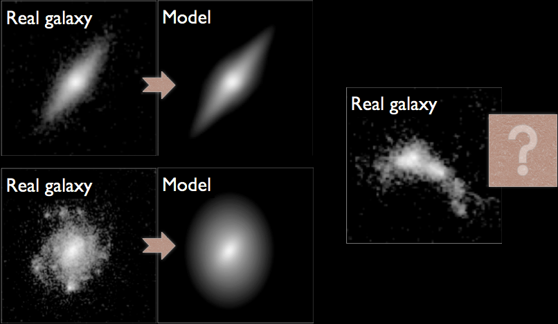

Map-to-map translation
of simulated galaxies with conditional GANs
SKA research at
Zurich University of Applied Sciences (ZHAW)
Centre for Artificial Intelligence (CAI)
Institute for Business Information Technology (IWI)
Neuchâtel, 2024/01/22 Mon
 Philipp Denzel, Frank-Peter Schilling, Elena Gavagnin
Philipp Denzel, Frank-Peter Schilling, Elena Gavagnin
SKA research at
Zurich University of Applied Sciences (ZHAW)
Centre for Artificial Intelligence (CAI)
Institute for Business Information Technology (IWI)
Zurich University of Applied Sciences (ZHAW)
Institute for Business Information Technology (IWI)
Neuchâtel, 2024/01/22 Mon
Philipp Denzel, Frank-Peter Schilling, Elena Gavagnin
Slides on my website
Link/QR code to the slides for later or to follow along
Projects at ZHAW
- SKA project:
- trained (astro)physicists, focused on ML research
- our expertise:
- deep generative modelling of (sky) simulations
- CV, DL, XAI, MLOps, …
- recently expanded efforts
- two new projects
Figure 1: ZHAW's SKACH team at CSCS in Lugano
Outlook
The times they are a-changin'
- the end of the analytic era
- modern surveys: galaxies are no longer blobs
- rethink data analyses: analytic ⟶ data-driven
Deep Generative galaxy modelling
- goal is to learn an implicit distribution \(\mathbb{P}\) from which
the training set \(X = \{x_0, x_1, \ldots, x_n \}\) is drawn
Analytic models \(\mathbb{P}_\theta\)

Figure 2: Credit: Mandelbaum et al. (2014)
Simulators \(\mathbb{P}_\theta\)
Figure 3: Credit: Schaye et al. (2023)
Implicit distributions
- in both cases, we cannot
- sample from (the true) \(\mathbb{P}\)
- evaluate the likelihood \(p_\theta(x)\)
- which means: we cannot generate new plausible galaxies
- what for?
For instance: strong lensing
Figure 4: 2006, Credit: NASA, ESA, D. Player (STScI)
Strong lens modelling
input data
⟶
latent representation
⟶
reconstruction
Dataset: SPH simulations
B-field (TNG100), Credit: IllustrisTNG
- projected IllustrisTNG galaxies
- 6 domains:
- dark-matter, stars, gas,
HI, temperature, magnetic field
- dark-matter, stars, gas,
- ∼ 3000 galaxies
- ∼ 10000 images / domain
- augmented:
- up to 5x randomly rotated
- scale: 2 dark-matter half-mass radii


Figure 5: Use image domain translation models: observations (21cm) ↔ physical properties
cGANs: pix2pix schema

Figure 6: Use pix2pix to generate dark matter maps from mock observations
Sampling from \(\mathbb{P}_\theta\)
Ground truth
Predictions from pix2pix (from gas projections)
Evaluation
Next steps
- physical metrics: radial/elliptical (NFW) profiles
- substructure just above the resolution limit
- still not able to evaluate \(p_\theta(x)\)
- GANs: average performance expected to be slightly worse compared
to autoregressive and score-based methods
Point-cloud experiments
- generative models for full 3D+ simulations
| Property | SPH data | Point clouds |
|---|---|---|
| applications | hydrodynamics | 3D scanning, CAD, etc. |
| list of coordinates | ✓ | ✓ |
| unordered | ✓ | ✓ |
| invariance: vector-row perm. | ✓ | ✓ |
| invariance: geometric transf. | ✓ | ✓ |
| discrete | ~ | ✓ |
| smoothing kernel | ✓ | ✗ |
AdaPoinTr
- initial tests indicate feasibility
- application: DM-only simulation, generate baryonic particle types (stars, gas, etc.)
Radio source classification
- idea developed with Michele Bianco (EPFL)
- student Manuel Weiss: tested SOTA classification & detection architectures
- ResNet, EfficientNet, ViT, etc. / YOLOv8, DINO, etc.
- goal: testing on the GLEAM survey
- Radio Galaxy Zoo Object Detection Data Set (11’836 labelled images)
Data preprocessing & augmentations
Difficulties
| Classes | 1_ 1 | 1_ 2 | 1_ 3 | 2_ 2 | 2_ 3 | 3_ 3 |
| Samples | 5300 | 1331 | 1412 | 1251 | 1208 | 1334 |
- unbalanced dataset
- even humans have difficulties distinguishing
- 1_ 2 vs 1_ 3 ⟶ FR1 vs FR2
- mislabelled samples?
Figure 7: Confusion matrix for the best ResNet model
Preliminary results
- probably mislabelled data
- best model: ResNet (small, not pretrained)
| Model | Top1 [%] | Top2 [%] | F1 [%] | Precision [%] | Recall [%] | ensemble σ |
| ResNet | 89.36 | 97.57 | 86.24 | 87.40 | 85.44 | 4.7% |
| ViT | 76.60 | 89.46 | 69.64 | 70.10 | 69.38 | - |
Contact